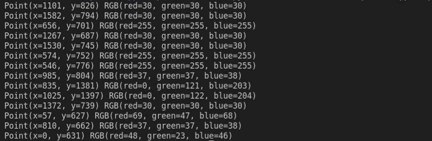
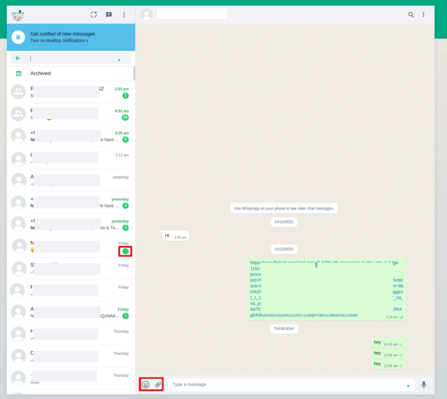
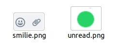
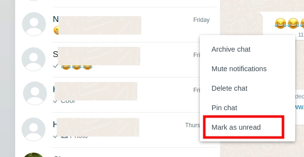
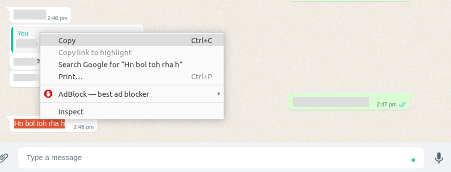

Create a program to reply to WhatsApp messages
Opening a WhatsApp message and replying to “Good Morning” texts every day or “Thank You” messages on a special occasion to so many people can be a really monotonous and time taking task. There must have been times when you have wondered if there was a way to automatically reply to messages of certain people.
By the end of this blog, your program will be able to reply to Whatsapp messages as and when they are received as shown in the video below:
I will be creating a python bot that will go through unread messages in WhatsApp and respond to them as per the response condition set. So no more monotonous texting. You can also have an AI (Artificial Intelligence) bot chatting with your friends you don’t want to be bothered by.
Remember in Silicon Valley, Gilfoyle created an automated reply bot for chatting with Dinesh! 😂

I will be using python for this. The steps are as follows :
Before starting, we would need to install open-cv, pyautogui, and pyperclip. Open your terminal and type the following commands to install the packages:
$ pip install opencv-python
$ pip install pyautogui
$ pip install pyperclip
If you are using Ubuntu (Linux), you would have to additionally install the following packages :
$ sudo apt-get install scrot
$ sudo apt install xclip
Create a folder named whatsapp and inside it create a file gui_info.py. This program will collect information about the color and position of certain elements on the screen. Add the following code :
import pyautogui as pt
from time import sleep
while True:
posXY = pt.position()
print(posXY, pt.pixel(posXY[0], posXY[1]))
sleep(1)
if posXY[0] == 0:
break
The above code will print the coordinates of the mouse pointer and the color it is hovering over. The program will terminate when the mouse pointer touches the x-axis. The output should look for this:

Next, we have to take some snapshots to tell the program where it should drag the mouse to and where to click. Take a screenshot of the images marked with a red rectangle.



To get the green circle, right-click on a contact and click mark as unread. Now that we have a smilie and unread message screenshot, save it in the project directory.
Create a new file main.py in the whatsapp folder and write the following code:
import pyautogui as pt
from time import sleep
import pyperclip
import random
sleep(3)
def move_pointer():
global x, y
position = pt.locateOnScreen("whatsapp/smilie.png", confidence=.6)
x = position[0]
y = position[1]
pt.moveTo(x, y, duration=0.5)
move_pointer()
This code will move the mouse pointer to the smilie icon on WhatsApp. Run this python code to verify that the code actually works. The way to do that would be to run the python program and quickly switch to the screen where WhatsApp web is running. (If the program does not move, try playing with the confidence parameter and try it with values between 0.6 to 0.9)
Once you verify that the code is working, we will proceed to read the last sent message. Some calibration is required here to move the mouse pointer to the last received message. pt.moveTo(x, y, duration=0.5) will actually move the mouse pointer to the smilie image. The received message is slightly above it, so we will edit it to hover over that message. For me it is pt.moveTo(x+100, y-45, duration=0.5) . You can use trial and error to find out the pixel difference for your screen.
The next step is to programmatically select the last received message, copy it, and read the text from the clipboard. Adding the following lines of code will do it
pt.tripleClick()
pt.rightClick()
pt.moveRel(12, 15)
pt.click()
pt.tripleClick() to select the text.
pt.rightClick() to right-click
pt.moveRel(12, 15) to move the cursor to the copy icon
pr.click() to select copy

The cursor should copy the text as shown in the above image
Run it to see everything works as expected.
Next, I will add a function send_message in main.py . The function definition would look like this.
def send_message(message):
position = pt.locateOnScreen("whatsapp/smilie.png", confidence=.6)
x = position[0]
y = position[1]
pt.move(x+100, y+20, duration=0.5)
pt.click()
pt.typewrite(message, interval = 0.01)
pt.typewrite("\n", interval = 0.01)
pt.move(x+200, y+20, duration=0.5) will move the cursor to the reply area
pt.typewrite(message, interval = 0.01) will type the message in the text box.
pt.typewrite("\n", interval = 0.01) is similar to clicking enter on the keyboard, and it will send the message.
The above code will return the message back to the person. If we want to process the message and send the response as per a certain condition, we will add the following function process_response :
def process_response(message):
mes = str(message).lower()
if "happy hirthday" in str(mes):
return "Thank You!"
elif "?" in str(mes):
return "Not Interested"
elif "good morning" in str(mes):
return "Good Morning"
elif "Hi" in str(message):
return "Hi"
else:
return "Wassup! How you doin"
The above code returns the response as per certain criteria, for eg, if anyone sends a message containing Happy birthday, the program will return “Thank You” and so on. This is the place where you would be adding an A.I. model (if you have one) to chat with a person.
Now we have to write a function that continuously checks for new messages. Basically, search for the green dot I took a screenshot of earlier. I will create a function check_for_unread_messages :
def check_for_unread_messages():
while True:
try:
position = pt.locateOnScreen("whatsapp/unread.png", confidence = 0.7)
if position is not None:
pt.moveTo(position)
pt.moveRel(-100,0)
sleep(1)
except(Exception):
print("No new messages")
The above code will hover over the chat which is unread
We will also add a condition to check if there is the last message was sent by the other person. It’s more like a fail-safe mechanism in case we run into an infinite loop. The place I select the last chat, I will add a condition to check if the color of the pixel the cursor is hovering is white, then only proceed with the steps.
The final code of main.py looks like this:
import pyautogui as pt
from time import sleep
import pyperclip
sleep(1)
global x, y
position = pt.locateOnScreen("whatsapp/smilie.png", confidence=.6)
x = position[0]
y = position[1]
def get_received_message():
position = pt.locateOnScreen("whatsapp/smilie.png", confidence=.6)
x = position[0]
y = position[1]
pt.moveTo(x+100, y-45, duration=0.5)
pt.tripleClick()
pt.rightClick()
pt.moveRel(100, -170)
pt.click()
received_message = pyperclip.paste()
print("Received Message: "+received_message)
return received_message
def send_message(message):
position = pt.locateOnScreen("whatsapp/smilie.png", confidence=.6)
x = position[0]
y = position[1]
pt.moveTo(x+100, y+50, duration=0.5)
pt.click()
pt.typewrite(message, interval = 0.01)
pt.typewrite("\n", interval = 0.01)
def process_response(message):
mes = str(message).lower()
if "happy hirthday" in str(mes):
return "Thank You!"
elif "?" in str(mes):
return "Not Interested"
elif "good morning" in str(mes):
return "Good Morning"
elif "Hi" in str(message):
return "Hi"
else:
return "Wassup! How you doin"
def check_for_unread_messages():
while True:
try:
position = pt.locateOnScreen("whatsapp/unread.png", confidence = 0.7)
if position is not None:
pt.moveTo(position)
pt.moveRel(-100,0)
pt.click()
sleep(1)
except(Exception):
print("No new messages")
if pt.pixelMatchesColor(int(x+100), int (y-35), (255, 255, 255), tolerance = 10):
print("is_white - new message")
received_message = get_received_message()
message_to_send = process_response(received_message)
send_message(message_to_send)
else:
print("no new message")
check_for_unread_messages()
Kudos! Your Whatsapp Autoreply bot is ready!
You can find the project link here: https://github.com/gouravdhar/automatic-whatsapp-response

I am Gourav Dhar, a 2019 graduate from IIT Roorkee where I pursued my bachelors in Electronics and Communication Engineering.
Know More